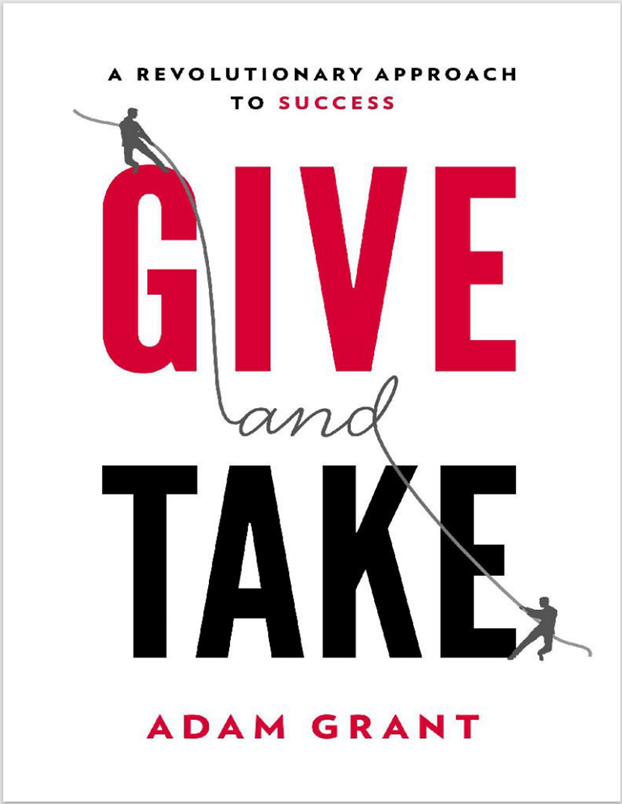

Book Analysis: Give and Take by Adam Grant

This is the top three book of my life which I would love to read again and again.
About Author:
Adam Grant is an organizational psychologist and bestselling author who explores the science of motivation, generosity, original thinking, and rethinking. (From author’s website)
About Book:
The author delineates three distinct personality types: givers, takers, and matchers. Through the depiction of these characters, the author presents various experiments that demonstrate how givers often find themselves at the lower rungs of the success ladder.
Then who are the top?
Surprisingly takers and matchers are mediocre and givers are at the top as well.
The question arose as to what distinguishes a giver at the bottom from a giver at the top. The answer to this inquiry can be found through a multitude of fascinating concepts and real-life stories of accomplished individuals.
Notable Stories
Enron CEO Ken Lay
Ken Lay was a fake giver due to which his company Enron collapsed in 2002 and several studies show that they can identify the collapse 4 years before the downfall of Enron.
Panda programmer Adam Forrest Rifkin: His motto is “I want to improve the world, and I want to smell good while doing it.”
He built a gigantic network in different industries and always tried to help others genuinely and make other people successful which ultimately made him successful.
George Meyer
Meyer summarizes his code of honor as (1) Show up. (2) Work hard. (3) Be kind. (4) Take the high road. People tend to come up with ideas and jealously guard them, but George would create ideas, give them to someone else and never take credit.
Reggie Love:
Reggie was a star athlete at Duke, where he accomplished the rare feat of playing key roles on both the football and basketball teams. But after two years of failed NFL tryouts following graduation, he decided to shift gears. Having studied political science and public policy at Duke, Love pursued an internship on Capitol Hill. With a background as a jock and little work experience, he ended up with a position in the mailroom of Obama’s Senate office.
“Love worked eighteen-hour days and flew more than 880,000 miles with me. “His ability to juggle so many responsibilities with so little sleep have been an inspiration to watch,” -- Barack Obama
Love is known for his exceptional and universal kindness.
Some amazing concepts:
Decision makers are biased in favor of their previous investments—but three other factors are more powerful.
- One is anticipated regret:
- The second is project completion:
- But the single most powerful factor is ego threat:
Pratfall effect: It’s a concept in powerless communication. When the average candidate is clumsy, audiences like him even less. But when the expert is clumsy, audiences like him even more.
Otherish:
- People who help others while maintaining certain kind of self interest in long term.
- Otherish givers build up a support network that they can access for help when they need it.
- Otherish givers may appear less altruistic than selfless givers, but their resilience against burnout enables them to contribute more.
Optimal Distinctiveness:
- It was not just any commonality that drove people to act like givers. It was an uncommon commonality.
- The solution is to be the same and different at the same time. Brewer calls it the principle of optimal distinctiveness: we look for ways to fit in and stand out.
Amazing quotes:
- The true measure of a man is how he treats someone who can do him absolutely no good.
- Strong ties provide bonds, but weak ties serve as bridges: they provide more efficient access to new information.
- What goes around comes around.
- It is well to remember that the entire universe, with one trifling exception, is composed of others.
- When we treat man as he is, we make him worse than he is; when we treat him as if he already were what he potentially could be, we make him what he should be.
- Spotting and cultivating talent are essential skills in just about every industry.
- If you choose to champion great talent, you will be picking one of the most altruistic things a person can do
- The intelligent altruists, though less altruistic than the unintelligent altruists, will be fitter than both unintelligent altruists and selfish individuals.
Social scientists have discovered that people differ dramatically in their preferences for reciprocity—their desired mix of taking and giving.
Whereas takers tend to be self-focused, evaluating what other people can offer them, givers are other-focused, paying more attention to what other people need from them.
If you’re a giver at work, you simply strive to be generous in sharing your time, energy, knowledge, skills, ideas, and connections with other people who can benefit from them. Outside the workplace, this type of behavior is quite common.
the least successful engineers were those who gave more than they received.
There’s even evidence that compared with takers, on average, givers earn 14 percent less money, have twice the risk of becoming victims of crimes, and are judged as 22 percent less powerful and dominant.
The juxtaposition of George Meyer with Frank Lloyd Wright(civil engineer) reveals how givers and takers think differently about success.
Meyer summarizes his code of honor as “(1) Show up. (2) Work hard. (3) Be kind. (4) Take the high road.
“People tend to come up with ideas and jealously guard them, but George would create ideas, give them to someone else and never take credit.
Partners overestimate their own contributions. This is known as the responsibility bias:
This is known as psychological safety—the belief that you can take a risk without being penalized or punished.
givers are motivated to benefit others, so they find ways to put themselves in other people’s shoes.
Barry Staw is a world-renowned organizational behavior professor
Peter Audet, whose giver style paid off when he took a drive to visit a scrap metal client whom he selflessly helped to create wealth.
Giving and taking are based on our motives and values, and they’re choices that we make regardless of whether our personalities tend agreeable or disagreeable.
Empathy is a pervasive force behind giving behaviors, but it’s also a major source of vulnerability
Common ground is a major influence on giving behaviors.
Kildare Escoto: My job is to take the patient, ask the patient questions, and see what the patient needs. My mind-set is not to sell. My job is to help. My main purpose is to educate and inform patients on what’s important. My true concern in the long run is that the patient can see.
Experiment about how a recipient feel:
The toddlers had two bowls of food in front of them: one with goldfish crackers and one with broccoli. The toddlers tasted food from both bowls, showing a strong preference for goldfish crackers over broccoli. Then, they watched a researcher express disgust while tasting the crackers and delight while tasting the broccoli. When the researcher held out her hand and asked for some food, the toddlers had a chance to offer either the crackers or the broccoli to the researcher. Would they travel outside their own perspectives and give her the broccoli, even though they themselves hated it? The fourteen-month-olds didn’t, but the eighteen-month-olds did. At fourteen months, 87 percent shared the goldfish crackers instead of the broccoli. By eighteen months, only 31 percent made this mistake while 69 percent had learned to share what others liked, even if it differed from what they liked. This ability to imagine other people’s perspectives, rather than getting stuck in our own perspectives, is a signature skill of successful givers in collaborations.
Giver burnout:
The turnaround highlights a remarkable principle of giver burnout: it has less to do with the amount of giving and more with the amount of feedback about the impact of that giving.
With no clear affirmation of the benefits of their giving, the effort becomes more exhausting and harder to sustain.
Concept of:
Selfless givers receive far less support than otherish givers,
Generous tit for tat is an otherish strategy.